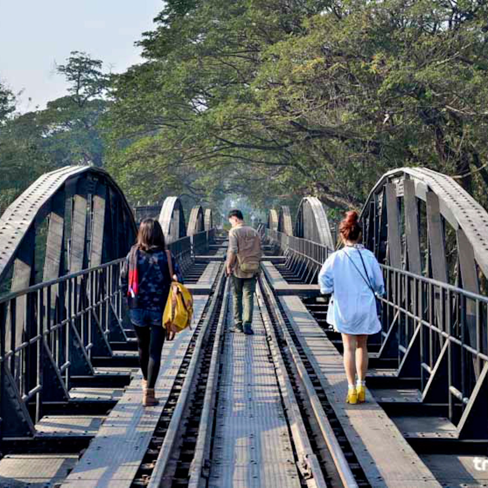

มาถึง กาญจนบุรีหนึ่งในจุดท่องเที่ยวที่เรานึกถึงเป็นลำดับต้นๆ คงหนีไม่พ้นก็คือสะพานข้ามแม่น้ำแคว ทางรถไฟที่ทอดตัวยาวข้ามแม่น้ำประมาณ 300 เมตร เป็นหนึ่งในแลนด์มาร์คของเมืองกาญจน์เลยทีเดียว อีกทั้งยังเป็นรถไฟสายประวัติศาสตร์ของโลกในช่วงสงครามโลกครั้งที่ 2 อีกด้วย
จังหวัดกาญจนบุรีนั้น นอกจากจะมีสถานที่สำคัญมากมาย แต่ละแห่งก็ล้วนเป็นส่วนหนึ่งของหน้าประวัติศาสตร์โลกทั้งนั้น ไม่ว่าจะเป็น สะพานข้ามแม่น้ำแคว สถานีรถไฟถ้ำกระแซแล้ว ยังมีอีกหนึ่งสถานที่สำคัญที่จะทำให้คุณรู้สึกอินกับประวัติศาสตร์ของกาญจนบุรี ที่"ช่องเขาขาด” หรือ อนุสรณ์สถานช่องเขาขาด Hellfireนั่นเองครับ
สุสานทหารสัมพันธมิตรช่องไก่หรือที่รู้จักกันอีกชื่อหนึ่งว่า “สุสานทหารสัมพันธมิตรเขาหินปูน” เป็นสุสานของเชลยศึกสัมพันธมิตรที่เสียชีวิตในระหว่างการสร้างทางรถไฟสายมรณะ พื้นที่ประมาณ 7 ไร่ บรรจุศพเชลยศึกรวม 1,750 หลุม ซึ่งส่วนใหญ่เป็นทหารอังกฤษ ภายในมีการตกแต่งด้วยไม้ดอกไม้ประดับอย่างร่มรื่น สถานที่ได้รับการดูแลรักษา โดยคณะกรรมาธิการสุสานสงครามแห่งเครือจักรภพ (The Commonwealth war Graves Commission)
สถานที่ท่องเที่ยว กาญจนบุรี อำเภอสังขละบุรี นั้น ต้องบอกว่านอกจากความงดงามของธรรมชาติที่สวยงามมากๆ แล้ว ยังมีโบราณสถานที่สำคัญของพระพุทธศาสนา ให้คนไทยและคนไทยเชื้อสายมอญได้กราบไหว้บูชากันอีกด้วย และความด้วยอลังการ ความยิ่งใหญ่ ขององค์ เจดีย์พุทธคยา สังขละบุรีสีเหลืองทองนี่แหละค่ะ ที่ต้องห้ามพลาดเลย
123 หมู่ที่ 16 Thanon Mittraphap, Nai Mueang, Mueang Khon Kaen District, Khon Kaen 40002